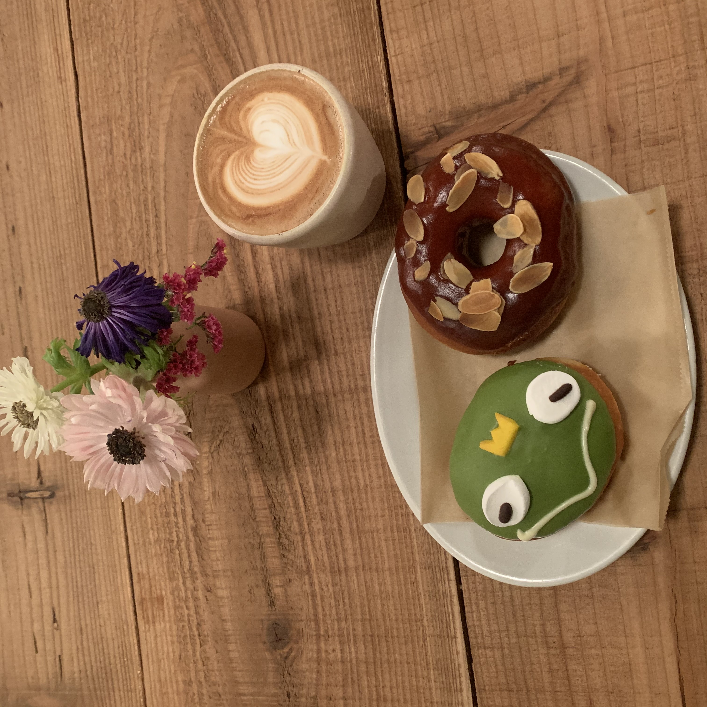
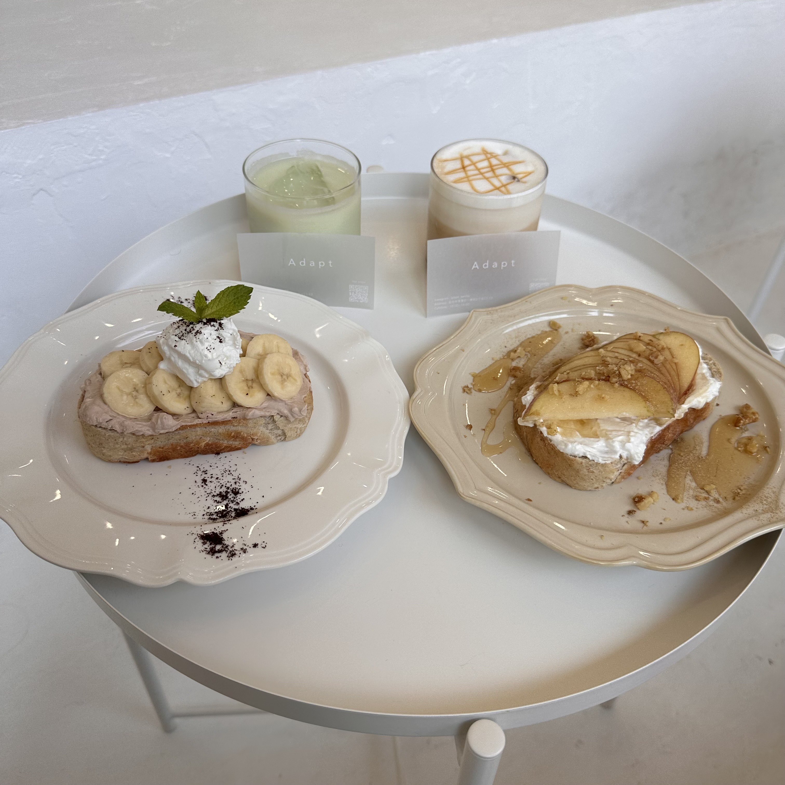
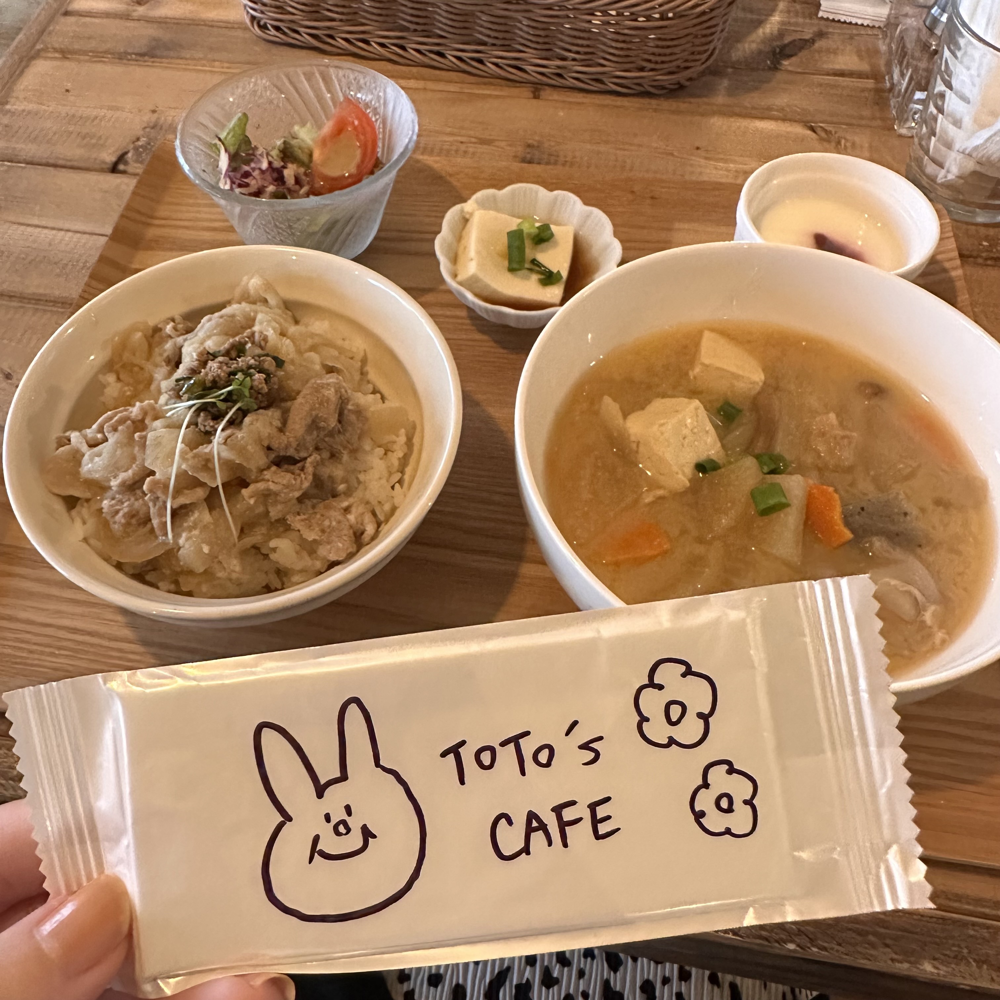
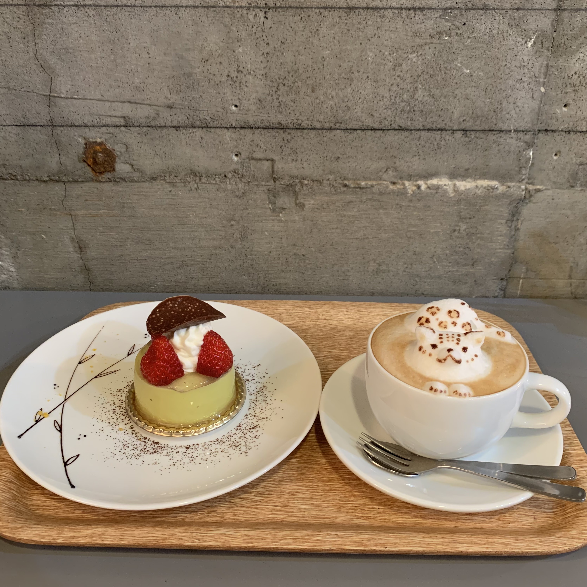
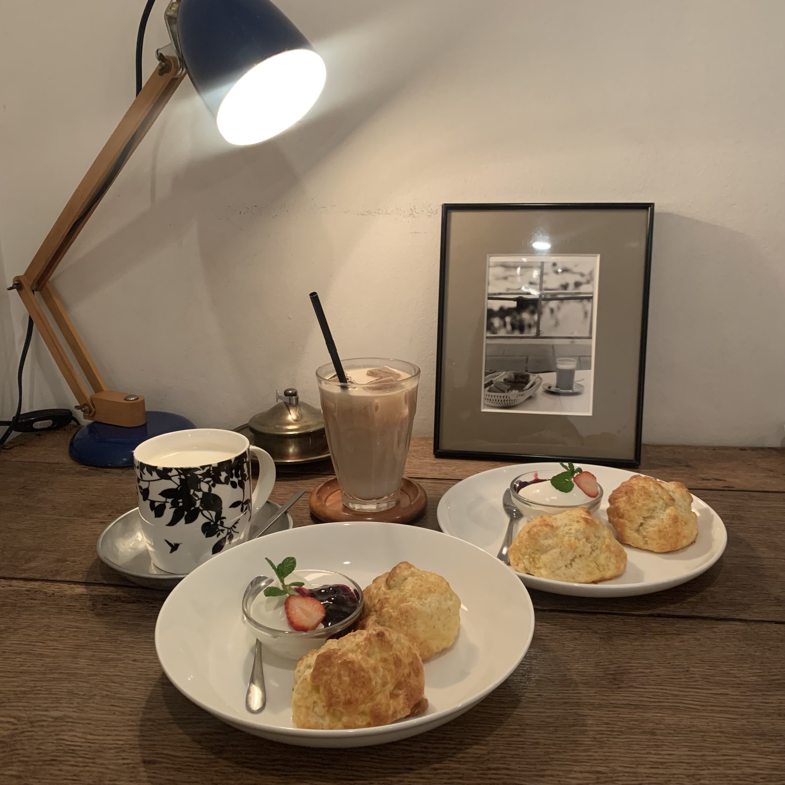
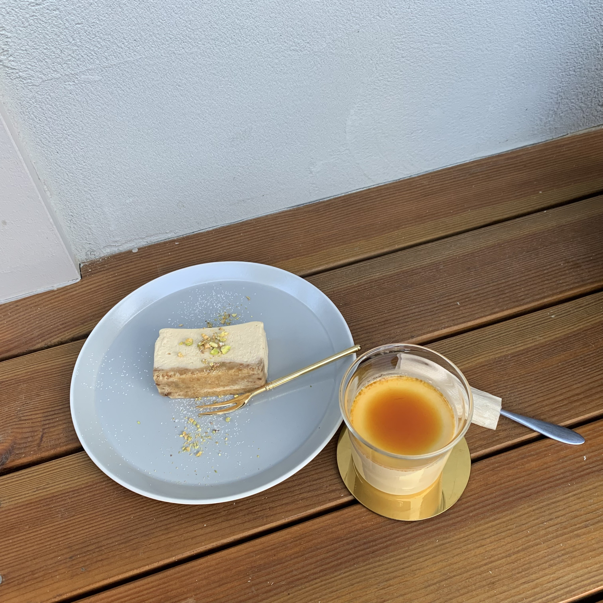
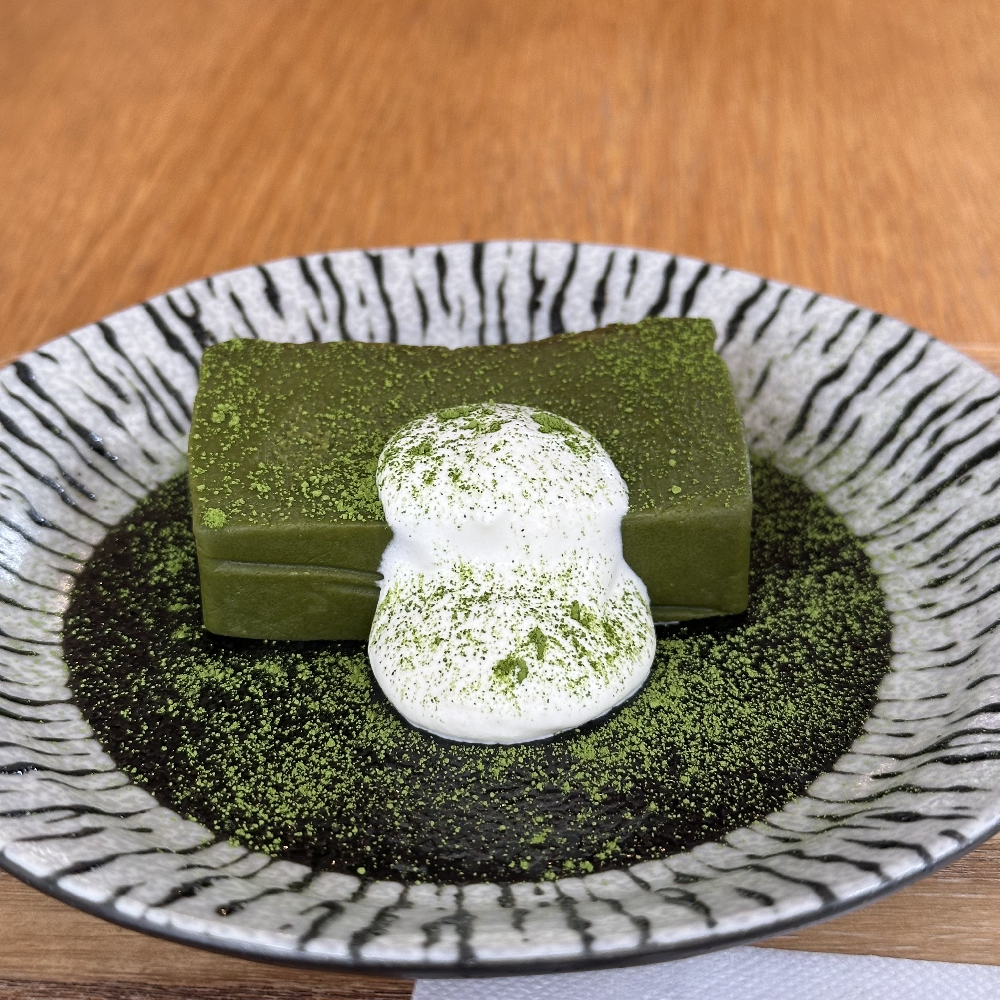
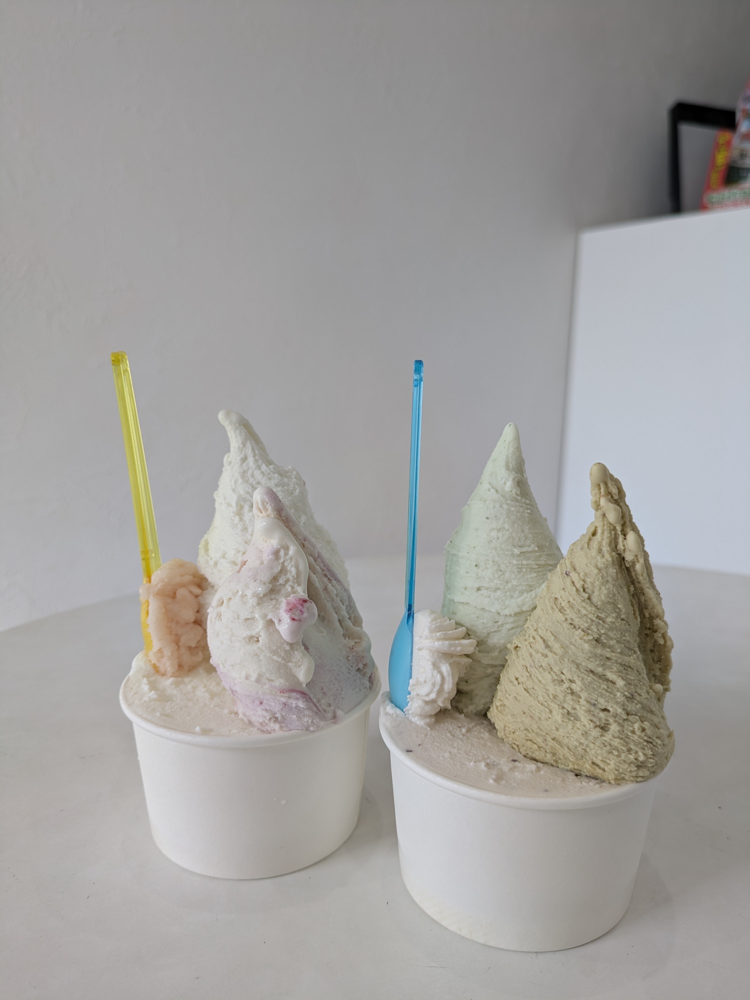

大人気カフェ~穴場カフェまでご紹介☕

HEY
動物たちのの可愛くておいしいドーナツが勢揃いしているカフェ
Kero men&caramel

Adapt
韓国風カフェ。店内はホワイトを基調としていてインスタ映え間違いなし。
タルティーヌ

TOTO's cafe
店内にはドライフラワーがたくさんのおしゃれな空間が広がっている。発酵カフェと掲げており栄養たっぷりのメニューを味わうことができる。
発酵御膳

MythiQue
ロンドン、北欧、イタリア等様々なコンセプトで作りあげられた店内。本格的なコーヒーも味わうことができます。
3Dラテアート

cafe Mozart
アンティーク家具が揃っており何時間でも居れてしまう素敵空間。ランチメニューからカフェメニューまで勢揃い。
スコーンのセット

MIDI
秋保の自然に囲まれた小さなカフェ。宿泊前後にもぴったりのお店。
テリーヌチーズケーキ

甘味処すずや
和風スイーツが人気のお店。モナカやあんみつ等のメニューが勢揃い。
抹茶テリーヌショコラ

Gelateria Liberta
日本で6人しかいないイタリアンジェラート協会認定のジェラート騎士が在中するカフェ。濃厚な味わいのジェラートが楽しめる。
TRE